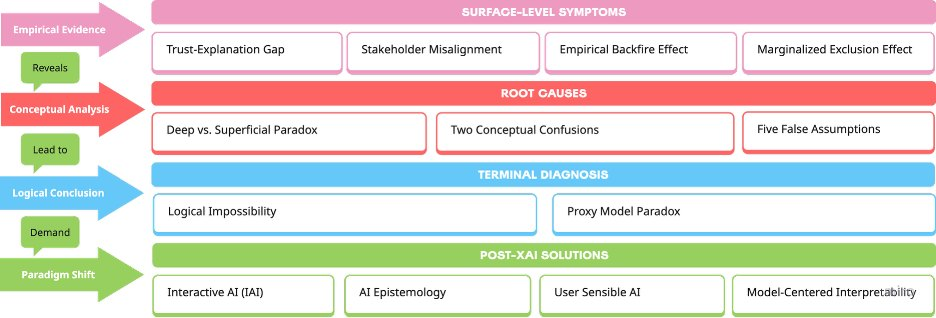
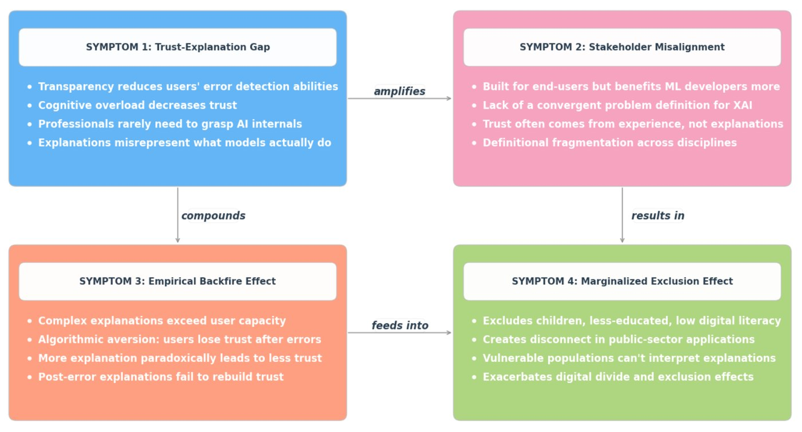
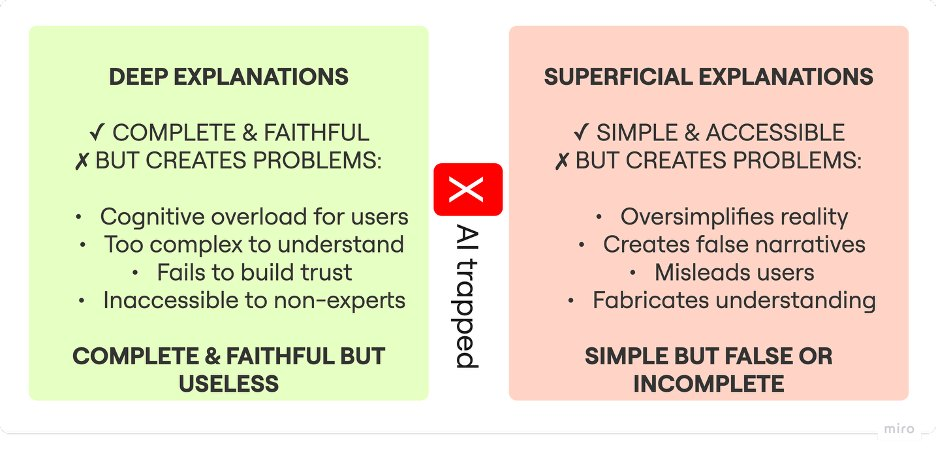
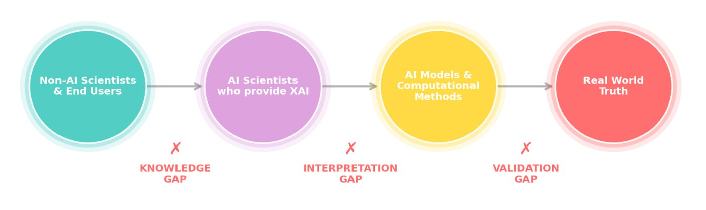
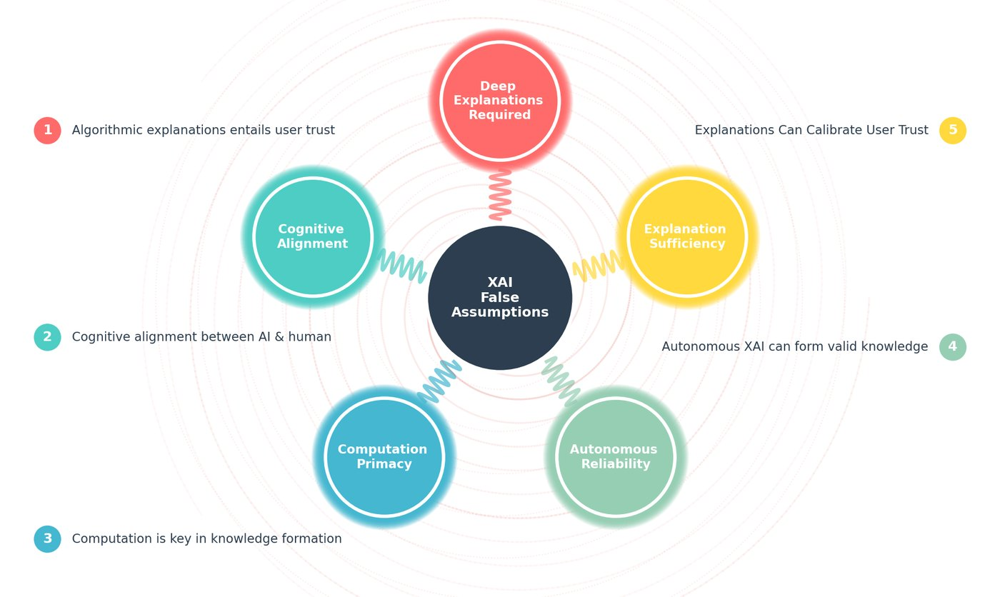
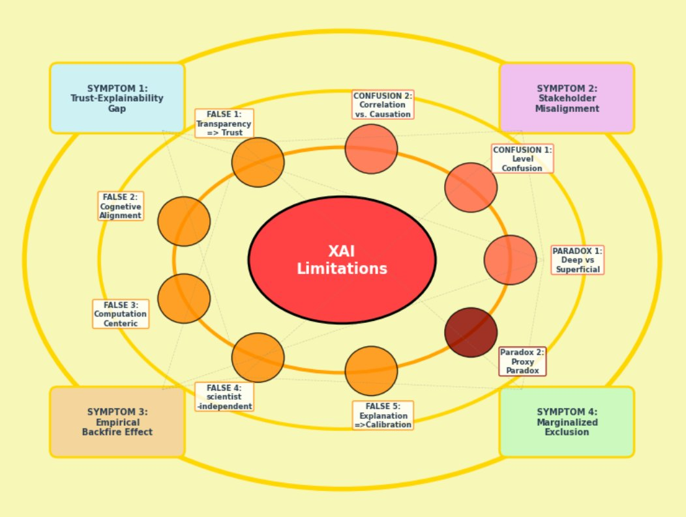
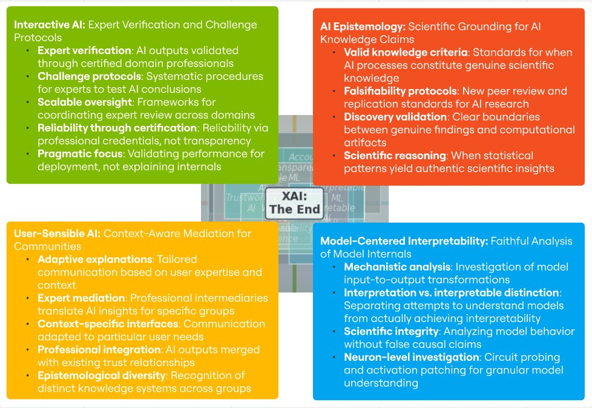

Explainable AI (XAI) promised to make deep neural networks and LLMs understandable. This cross-disciplinary study, written with 49 researchers, examines XAI’s empirical and conceptual record and traces its visible failures back to deeper root causes: two paradoxes, two conceptual confusions and five false assumptions. The conclusion is threefold: experimentally XAI has significant flaws, conceptually it is paradoxical, and pragmatically further attempts to patch it may deepen the confusion. We propose a four-part shift toward reliable, certified AI.
Highlights
Faithful explanations of deep models are too complex for people to use, and simple ones are not faithful: the deep–superficial paradox.
Explaining a model with a simpler proxy either makes the proxy unnecessary or requires explaining the proxy, an infinite regress.
Common assumptions, such as that explanations calibrate user trust, do not hold up against the evidence.
Instead of post-hoc explanation, we argue for community protocols that verify and certify AI performance, grounded in AI epistemology and tailored to users.
Three gaps separate end users from real-world truth: a knowledge gap, an interpretation gap and a validation gap (Fig. 4).
Framework

Fig. 1: from symptoms to solution, the paper’s systematic diagnosis of XAI.

Fig. 2: four surface-level symptoms found in empirical XAI studies, and how they reinforce one another.

Fig. 3: the XAI paradox. Deep explanations are faithful but unusable; superficial ones are usable but false.

Fig. 4: the three critical gaps in XAI: knowledge, interpretation and validation.

Fig. 5: the five false assumptions of XAI.

Fig. 6: the incurability of XAI: 13 critical issues linking symptoms, paradoxes, confusions and false assumptions.

Fig. 7: the post-XAI paradigm shift: Interactive AI, AI Epistemology, User-Sensible AI and Model-Centered Interpretability.
How it works
Cross-disciplinary review of XAI methods for deep neural networks and LLMs.
Symptom-to-root-cause diagnosis: surface-level empirical flaws traced to deeper conceptual causes.
Conceptual analysis of paradoxes, confusions and false assumptions in XAI.
Synthesis into a four-pronged research agenda for certified, reliable AI.